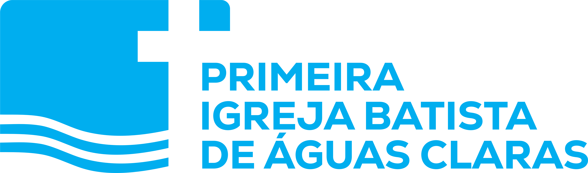

Primeira Igreja Batista de Águas Claras. Tudo nesta página é lido das variáveis de
tokens/tokens.css — se o token mudar, esta página muda junto.
Sete cores, derivadas do azul do próprio logotipo. Só tinta carrega texto corrido com folga; terra é detalhe e nunca texto pequeno.
Caixa alta convida. Caixa baixa acolhe. A escolha não é estética — é a intenção da peça. Nunca os dois no mesmo quadro.
Hoje tem culto
às 18 horas
Uma igreja não é só um lugar — é gente que caminha com você.
O texto é o protagonista, não a legenda da foto. Entrelinha colada em 0.92, alinhado à esquerda, informação fixa no topo e a marca assinando no rodapé. À esquerda, a cor principal dominando — e o texto em branco puro, o único que tem contraste sobre ela.
Venha
como
você está
Deus continua chamando e enviando sua Igreja.